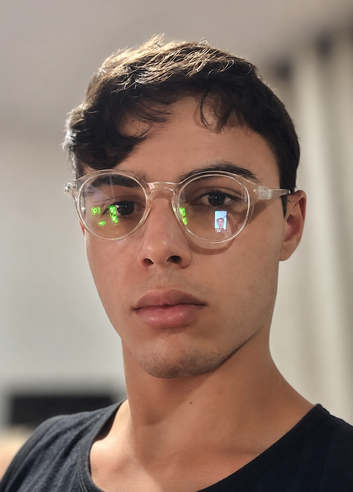
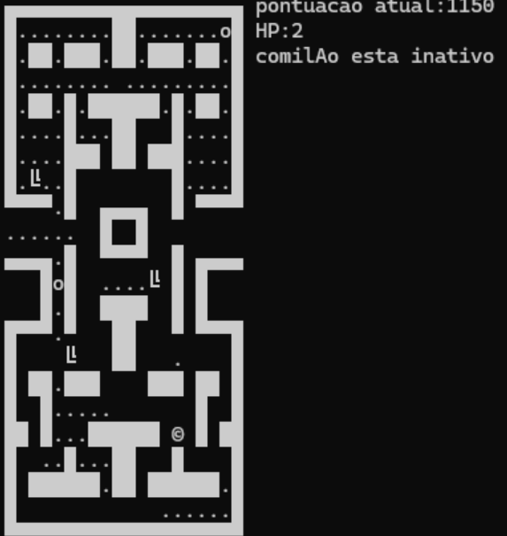
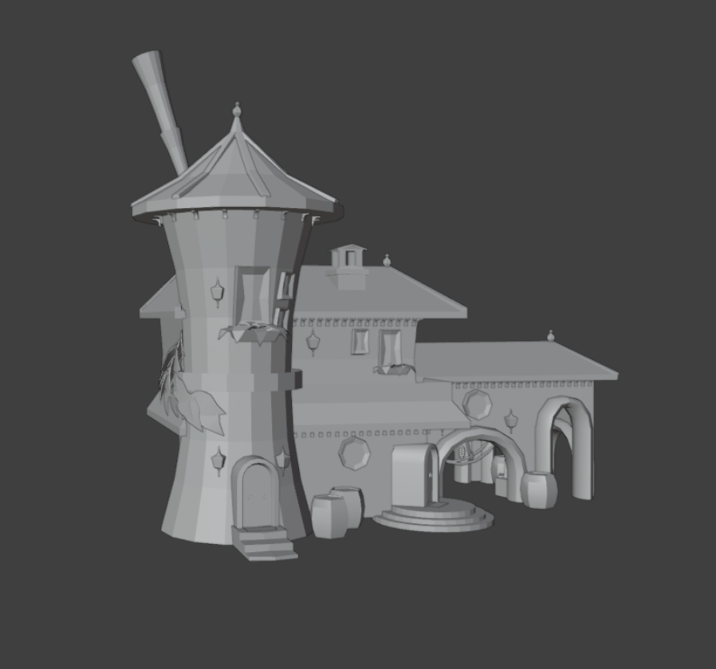
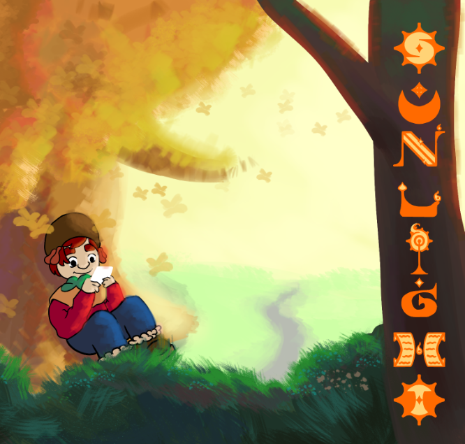
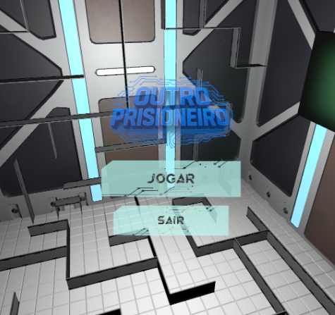
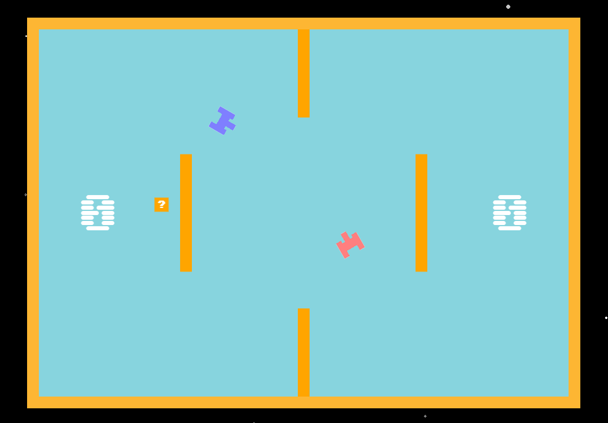

Desenvolvedor em Formação
Olá, meu nome é Gustavo da Costa e sou focado na área de desenvolvimento de software e tecnologia. Tenho experiência com criação de sites, aplicações e jogos digitais, utilizando diferentes linguagens e ferramentas modernas de programação.
Busco constantemente aprimorar minhas habilidades técnicas, desenvolver projetos criativos e adquirir experiência prática em desenvolvimento web, lógica de programação e criação de sistemas.
Tenho facilidade para trabalhar em equipe, aprender novas tecnologias e organizar tarefas de maneira eficiente, sempre buscando entregar soluções bem estruturadas e funcionais.
Contato
- Gustavo da Costa Souza
- gustavo.da.costa.264@gmail.com
- +55 41 98711-3541
Linguagens
- HTML5
- CSS3
- JavaScript
- Python
- C#
- C++
Ferramentas
- Visual Studio Code
- Unity Engine
- Godot Engine
- Blender
- Git & GitHub
Competências
- Desenvolvimento Web
- Lógica de Programação
- Resolução de Problemas
- Trabalho em Equipe
- Organização e Planejamento
- Aprendizado Contínuo
Idiomas
- Português — Nativo
- Inglês — Intermediário
Projetos

Pac-Man

Modelo de casa

Sunlight

Outro Prisioneiro
Canções do Havaí

Embate
Formação
Programação de Jogos Digitais + Ensino Médio
Instituto Federal do Paraná
Fev/2023 - Dec/2026
Técnico Integrado em Programação de Jogos Digitais
Experiência
Cadastro e organização de sistemas
Cargolift — Trabalho informal
Cadastro e organização de peças em catálogo digital, auxiliando na padronização de informações e no controle de dados internos.